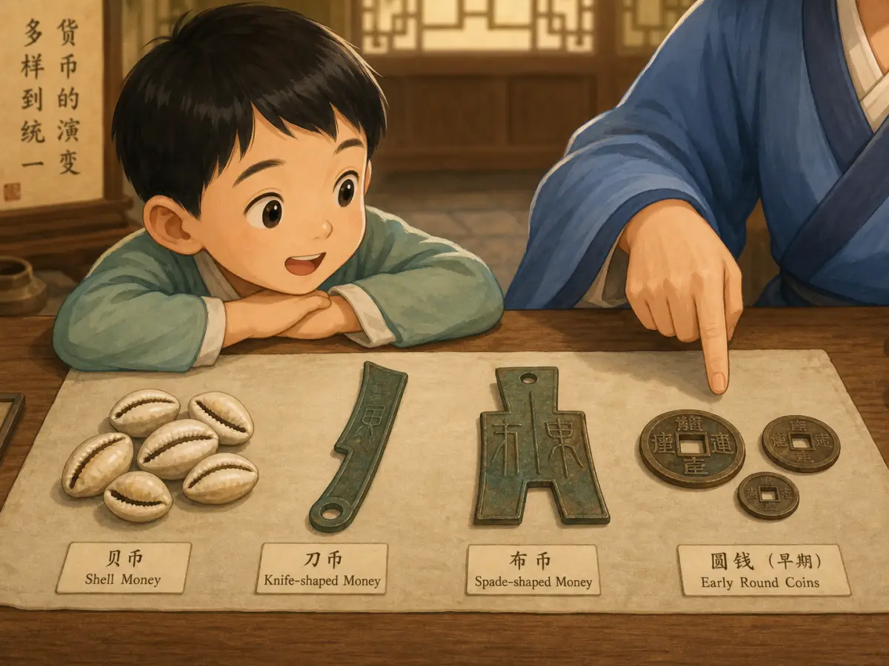
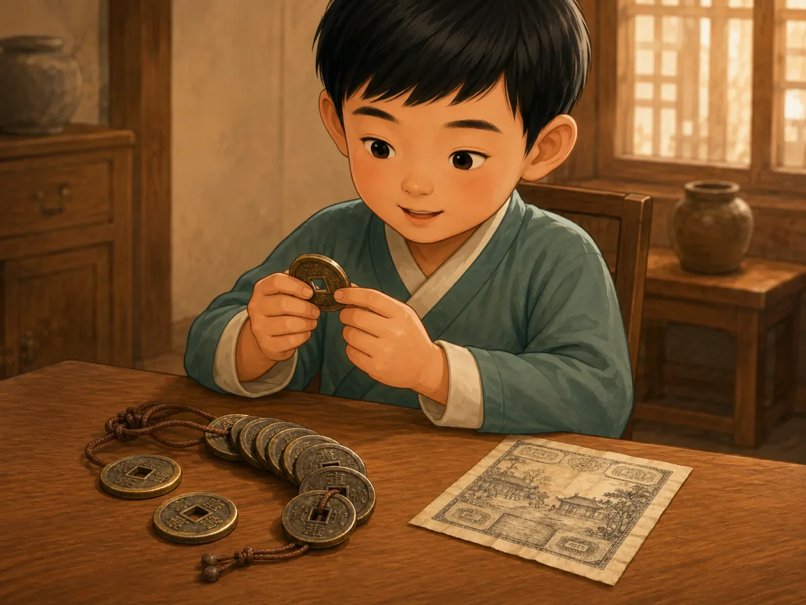
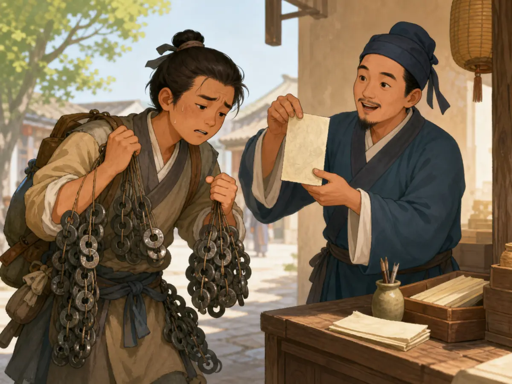

古代的钱为什么有这么多样子？
Why Did Ancient Chinese Money Have So Many Shapes?
Page 1
贝壳也能当钱
When a Shell Could Be Valuable

A child offers several white cowrie shells to a merchant holding a bowl of grain.
如果把一枚中国古代的钱放进手里，你可能根本认不出它是“钱”。有的钱像一把小小的青铜铲子，有的像一把刀。再往前追，还有一种钱根本不是金属，而是一枚小小的白色贝壳。又过了许多许多年，中国人甚至开始拿一张轻轻的纸来付钱。
钱为什么会从贝壳变成各种奇怪形状的铜钱，后来又变成纸呢？这个故事，要从海里的贝壳讲起。
三千多年前，海贝在中国是一种很珍贵的东西。它小巧、光滑，容易一枚一枚地数，也可以保存很久。对生活在内陆的人来说，这种来自远方海洋的贝壳并不容易得到。
古代青铜器上的铭文里，就有用“贝”计算赏赐和交换的记录。考古学家在商周遗址里发现过真正的海贝，也发现过用骨头、石头和青铜做成的仿贝。到了周代，贝已经被用作货币。
贝壳还悄悄留在了汉字里面。繁体的“貝”原来就像一只贝壳。直到今天，“贝”还出现在许多和钱财、货物、价值有关的汉字里。
可是，城镇和市场越来越多以后，人们需要的货币也越来越多。来自远方的海贝毕竟有限，金属却可以一次又一次铸造。于是，钱开始出现各种奇怪的形状。
If someone dropped an ancient Chinese coin into your hand, you might not recognize it as money at all. One piece might look like a tiny bronze spade. Another might be shaped like a knife. An even older kind of money might not be metal at all, but a small white shell. Then, many centuries later, people in China began paying with something lighter than all of them: paper.
How did money change from a shell to a bronze knife, then to a round coin, and finally to a piece of paper? The story begins with something that came from the sea.
More than three thousand years ago, cowrie shells were highly valued in ancient China. They were small, smooth, easy to count, and strong enough to be kept for a long time. They were also not easy to find in the inland regions where many people lived.
Ancient bronze inscriptions record cowries being counted and given in payments and rewards. Archaeologists have found real cowrie shells in Shang and Zhou sites, along with copies made from bone, stone, and bronze. By the Zhou period, cowries were being used as money.
The shells left a mark on Chinese writing too. The old form of bèi, 貝, was a picture of a shell. Even today, 贝 appears inside many Chinese characters connected with money, goods, and value.
But a growing world of markets and kingdoms needed more money than distant seas could easily provide. Metal could be cast again and again, and soon Chinese money began taking some very unusual shapes.
Page 2
像铲子，又像刀
Money That Looked Like a Spade

Placed side by side, cowrie shells, knife money, spade money, and round coins show the many shapes of ancient Chinese money.
两千多年前，中国还分成许多不同的国家，各地的钱也不一样。有些地方铸造的青铜钱像一把小铲子，人们今天把它叫作布币；有些地方的钱细细长长，看起来像刀，被称为刀币。还有的地方已经使用圆形钱，也有做成贝壳形状的金属钱。
不过，刀币并不是让人拿去切菜的小刀，布币也不是可以挖土的小铲子。它们本来就是专门铸出来当钱使用的，上面常常还有文字。所以，一个人如果从一个国家走到另一个国家，看到的钱可能也会跟着改变。
公元前221年，Qín Shǐhuáng · 建立秦朝、统一中国的第一位皇帝。统一六国以后，也统一了主要的货币制度。秦国原来使用的bànliǎng qián · 秦统一后推行的圆形方孔铜钱。被推广开来。这种钱是圆形的，中间有一个方孔。这个样子后来一用，就是两千年左右。
More than two thousand years ago, China was divided into different states, and they did not all use the same coins. Some states cast bronze money shaped like small spades. Others used long knife-shaped coins. There were also round coins and small metal pieces shaped like cowrie shells.
The little bronze “knives” were not meant for chopping vegetables, and the spade coins were not tiny gardening tools. They were made as money. Many even carried writing showing where they came from or how they were counted. That meant money could look quite different depending on where you traveled.
Then, in 221 BCE, the First Emperor of Qin united the different states under one government. He also brought the empire’s coinage under one system. The Qin bànliǎng qián · 半两钱 · The round bronze coin with a square hole standardized under the Qin empire. became the main bronze coin: a round coin with a square hole in the middle. That shape would last for an astonishingly long time.
Page 3
钱中间为什么有一个洞？
Why Put a Hole in Money?

Square-holed coins could be threaded onto cords; the paper certificate beside them later made large payments much easier to carry.
在钱中间挖一个方洞，看起来有点奇怪，其实非常实用。中国古代的钱常常是用模具铸出来的。刚铸好的钱边缘并不一定很光滑，需要继续整理。中间的孔可以帮助工匠把许多钱固定在一起加工。钱做好以后，还可以用绳子从孔里穿过去，把一枚一枚小钱串成一串，拿起来和计数都方便多了。
买一点小东西，可以数几枚钱；数目多了，就可以一串串地拿。可是，金属钱有一个谁都躲不开的麻烦：重。
大约一千年前，在Sìchuān · 中国西南省份，拥有大面积的大熊猫山林栖息地。，这个麻烦变得特别明显。
A square hole may seem like a strange thing to put in the middle of a coin, but it was useful. Chinese coins were cast in molds. After casting, workers needed to smooth their rough edges. The central hole allowed groups of coins to be held together while they were finished. Later, people could also thread coins onto cords, making many small coins much easier to carry and count. Round coins with square holes remained one of the most familiar forms of Chinese money for about two thousand years.
A shopkeeper could count out individual coins for a small purchase or handle a whole string when more money was needed. But strings of metal had an obvious problem. They were heavy.
And in one part of China, that problem became especially hard to ignore.
Page 4
钱太重了怎么办？
What If Your Money Is Too Heavy to Carry?

Heavy strings of iron coins weigh down one merchant, while a paper certificate can be held lightly in one hand.
北宋时期，四川常常使用铁钱。铁钱很沉，可一枚钱能够买到的东西并不很多。要做一笔比较大的生意，就可能要搬很多很多枚铁钱。
于是，商人想出了另一个办法。人们可以把金属钱存到一些可信的商户那里，再拿到一张写着数额、盖着印记的纸券。这种纸券叫作jiāozǐ · 北宋四川出现并由政府发行的早期纸币。。最开始，它很像一张存钱的凭证：这张纸证明，你有一笔钱存在这里。
可是，如果拿到纸的人也相信发行交子的商户，事情就方便了。他不一定非要先把纸换回沉重的铁钱，再去买东西。他可以直接把这张交子交给下一个人。这样，一张原本代表金属钱的纸，慢慢也开始像钱一样在市场里流通。
到了十一世纪初，交子已经在四川使用。后来政府接管了交子的发行，并在1023年设立专门的交子务。交子也因此成为目前所知最早由政府发行、可以流通的纸币。原本要搬一大堆的金属钱，现在可以由一张轻轻的纸来代表。
About a thousand years ago, people in Sìchuān · 四川 · A southwestern Chinese province containing extensive mountain habitat for giant pandas. often used iron coins. Iron was plentiful, but the coins were heavy compared with the amount they could buy. A merchant making a large payment might need to move a great many of them.
So merchants began trying something different. A customer could leave metal money with a trusted business and receive a printed paper certificate called jiāozǐ · 交子 · An early paper currency used in Sichuan and later issued by the Northern Song government.. The paper recorded the value that had been deposited. At first, it worked much like a receipt: bring it back, and the issuer was supposed to give you the money.
But then something clever happened. If another person trusted the certificate too, there was no need to turn it back into metal first. The paper itself could be passed on in payment.
By the early eleventh century, jiaozi was circulating in Sichuan. The government later took control of its issue, establishing an official jiaozi office in 1023. It became the earliest known government-issued circulating paper currency. A piece of paper now stood for a pile of much heavier coins.
Page 5
从贝壳到一张纸
From a Shell to a Sheet of Paper
把海贝、布币、刀币、方孔圆钱和交子放在一起看，它们几乎不像是同一种东西。可是，它们都曾经做过同一件事：让人们可以拿它来交换东西。
钱的样子不断变化，也是在解决一个又一个实际的问题。金属可以大量铸造；方孔可以让钱更方便整理和穿成串；到了铁钱太重的时候，纸又让人不用拖着一大堆金属到处走。
一千年前的四川商人可以把沉重的铁钱留下，拿着一张轻轻的交子去做生意。那张纸本身没有多重。真正重要的是，拿到它的人相信它代表多少钱。
Put a cowrie shell, a bronze spade coin, a round square-holed coin, and a sheet of jiaozi beside one another. They hardly look as if they belong to the same story. Yet each could carry value because people knew what it meant and were willing to accept it.
The shapes changed because people’s needs changed. Metal coins could be cast in large numbers. Holes made coins easier to finish, string, and carry. Paper made it possible to move a large value without hauling a mountain of metal.
A merchant in Sichuan could hand over a light sheet of paper and leave the heavy iron coins behind. The paper itself weighed almost nothing. What mattered was what everyone agreed it was worth.